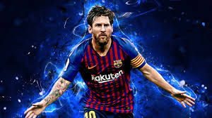
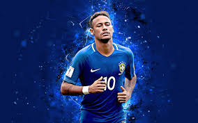

3 Most Famous Players:
1) Cristiano Ronaldo:


Full Name: Lionel Andrés Messi
Birth: 24 June 1987 Age:33 years
Born in: Rosario, Argentina
The Country he plays for: Argentina
League Teams: FC Barcelona 2004- Present time
More about him:
Messi holds the record for most goals in La Liga (456), the Supercopa de España (14),
the UEFA Super Cup (3) and is the player with the most official recorded assists in football history (303).
3) Neymar Jr.

Full name: Neymar da Silva Santos Júnior
Birth: 5 February 1992 Age:29 years
Born in: Mogi das Cruzes, Brazil
The Country he playes for: Brazil
League Teams: FC Barcelona 2016-2017
Paris Saint-Germain 2017-2018
More about him:
Samba Gold
Ligue 1 Player of the Year
World Young Player of the World